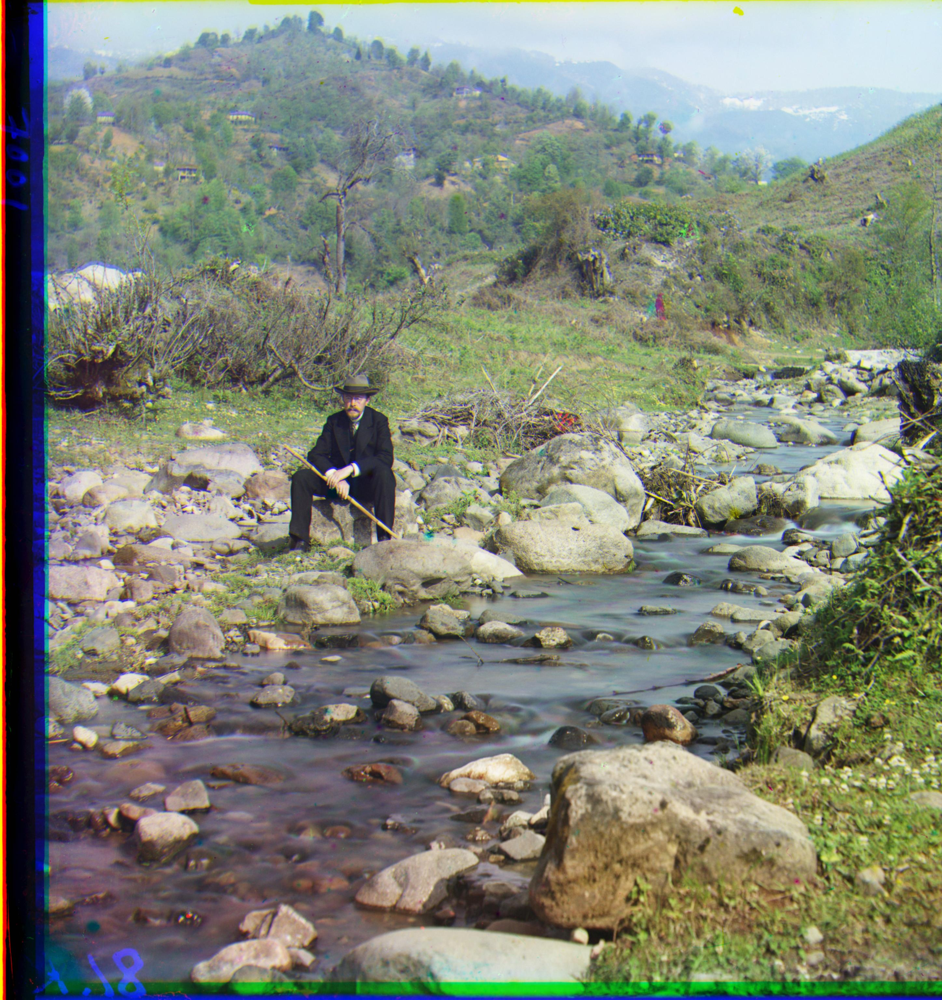

Introduction
The goal of this project was to turn extracted RGB channel images into one colored image by aligning the three channels as closely as possible.
Scoring Metrics
I played around with a number of different metrics to determine how well images were matched up, including L1 and L2 loss. Ultimately, I found that using the Canny edge detector in scikit-image worked best. I used a sigma value of 2 to reduce the number of curves, and applied this to both image matrices. I then checked how many elements matched between the resulting matrices, and used this sum score as my metric.
Smaller Images
For smaller images, I iteratively displaced the red and green channels by shifting them horizontally and vertically by a maximum of 20 pixels in any direction. All three channels were cropped by 20 pixels in all directions to ensure that any pixels that were rolled over to the opposite edge during displacement aren't accounted for.
Each iterative displacement was placed on top of the blue layer (which never moved) and the image matching metric was calculated as described above. I chose the displacement vectors for the red and green layers that maximize this metric, resulting in the images below.
Results
Red displacement: (3, 12)
Green displacement: (2, 5)
Red displacement: (2, 3)
Green displacement: (2, -3)
Red displacement: (3, 6)
Green displacement: (2, 3)
Larger Images (.tif files)
For larger images, this type of search becomes too exhaustive. To combat this, I recursively scaled down the image until it was no larger than 200x200 pixels. For this smaller, scaled down image, the same crop and iterative search was run to find the optimal x and y shift values. I then multiplied these shift values by 2 for each time the image was scaled down, to account for the number of pixels doubling. In between recursive runs, I did the displacement search with a window of (40,40) pixels to account for more granular differences.
Below are the aligned larger resolution images along with the red and green displacement vectors.
Results
Red displacement: (-4, 58)
Green displacement: (4, 25)
Red displacement: (40, 103)
Green displacement: (19, 48)
Red displacement: (10, 121)
Green displacement: (13, 59)

Red displacement: (22, 90)
Green displacement: (16, 36)
Red displacement: (13, 120)
Green displacement: (9, 57)
Red displacement: (11, 182)
Green displacement: (9, 89)
Red displacement: (34, 107)
Green displacement: (24, 52)
Red displacement: (-27, 140)
Green displacement: (-11, 33)

Red displacement: (32, 178)
Green displacement: (25, 81)
Red displacement: (8, 106)
Green displacement: (13, 57)
Red displacement: (28, 84)
Green displacement: (2, 54)
Additional Images
Red displacement: (48, 129)
Green displacement: (31, 61)
Red displacement: (60, 125)
Green displacement: (30, 54)